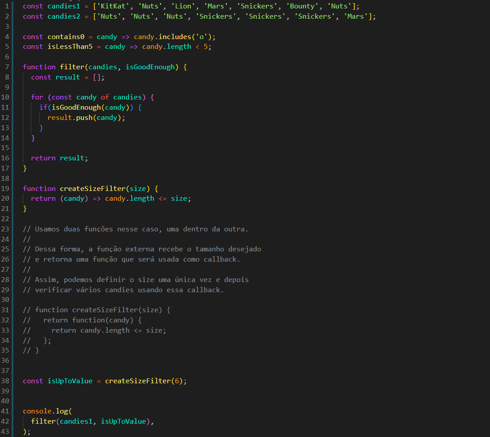
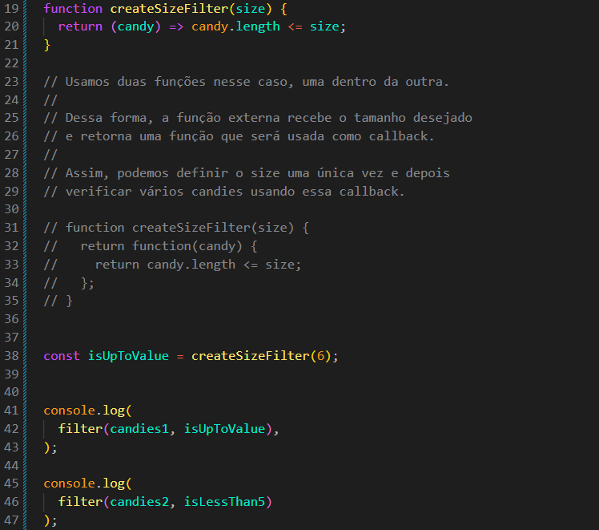

Filter Factory
Intro
Aqui iremos continuar basicamente com o mesmo codigo de nossa aula anterior, porem iremos dar mais um passo.
Aqui iremos continuar basicamente com o mesmo codigo de nossa aula anterior, porem iremos dar mais um passo.
JS:

Agora nossa tarefa é criar uma nova função chamada createSizeFilter(size), onde iremos receber o tamanho desejado para o filtro e retornar uma função que irá verificar se o doce possui essa quantidade de caracteres.
Basicamente, iremos continuar trabalhando com a mesma função filter criada na aula anterior. Porém, agora iremos adicionar uma nova função para podermos definir de forma mais fácil a quantidade de caracteres que desejamos filtrar.

Basicamente, com nossa função atual precisamos trabalhar com dois valores: size e candy. Porém, não podemos simplesmente passar os dois parâmetros para nossa createSizeFilter, pois isso não funcionaria da forma que desejamos com o filter.
Para contornar esse problema, criamos uma nova função dentro de createSizeFilter para servir como intermediária. Dessa forma, com o return function(candy), conseguimos trabalhar com os dois valores que precisamos: o size, recebido pela função externa, e o candy, recebido pela função interna.
Quando fazemos isso, a createSizeFilter retorna a função que recebe candy. Essa função retornada será utilizada diretamente pelo filter como callback, permitindo que o filter passe cada candy para ela.